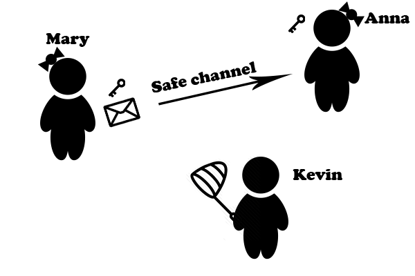

Cryptography
Cryptography is branch of science describing techniques for secure information. It is strictly connected with mathematics. Cryptography is about creating and improving cryptology methods which provide insurance that private messages could not be read by third parties. The aim of cryptography is to create cryptogram which is conditionally (with key) easy - the time and amount of arythmetical operations are low to retrive plain text, and unconditionally (without key) as difficult as possible.
Cryptography method or cipher in other words changes private message into the stream of letters which at first look does not have any sense. Thing which enables addressee to recreate original message is a key. The key is the set of parameters required cipher users to encrypt or decrypt the message.
We can distinguish two types of keys:
- symmetric key - key used for encryption and decryption is exactly the same
- assymetric key - pair of keys, one for encryption and the second one for decryption
We will look into that topic closer in the next pages.
So how everything looks like in practice. Lets assume that we have got two sisters Mary and Anna and one brother Kevin. Sisters always have their own secrets and they do not want Kevin to know them. When Kevin left house both sisters figured out the key.
Now let's move to the most important part. Mary writes letter to Anna, to provide security she uses encrypting function involving the private key. Thanks to that, attacker - nosy Kevin, if he steals the letter ho will not be able to read his siters secret. Anna gets the letter (through the safe channel) from her sister and uses decrypting function involving key.
Picture below shows the described situation.

Safety of the cryptosystem
One the most important aspects of cryptography system is safety. We have to distinguish naive and true safety of the cryptosystem.
Naive safety of the cipher tells as about total amount of possible keys. The more possible keys the higher naive safety is. However high naive safety of cryptosystem does not always provide true safety.
High naive safety of the cipher is effective against brute force attack.